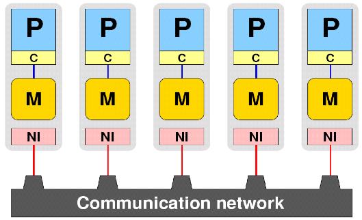

```c++
int main(int argc, char* argv[]) { int rank, size;
// Initialize MPI processes
MPI_Init(&argc, &argv);
// Getting number of MPI processes
MPI_comm_size(MPI_COMM_WORLD, &size);
// Getting rank of MPI process
MPI_comm_rank(MPI_COMM_WORLD, &rank);
printf("Hello, world from process: %d of %d! \n", rank, size);
// Close MPI processes
MPI_Finalize();
return EXIT_SUCCESS;
} ```